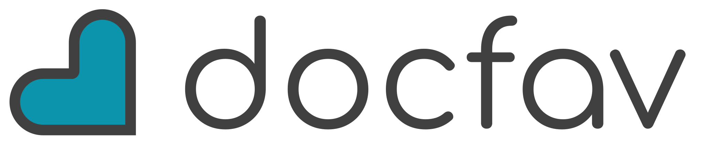

Hola, ¿tenéis hueco para una limpieza? Mejor por la tarde.
Llamadas en vivo
entrando llamada...
Motivo
Entorno de pruebas · no facilites datos personales reales.
Voz incluida en todos los planes · 200, 600 o 1.200 min/mes
ditbo® Recepción automatizada para clínicas dentales Primer mes gratis
Cristina · asistente virtual con IA está hablando…
Hola, soy Cristina, la asistente virtual de tu clínica dental. ¿En qué puedo ayudarte?
Tú
Contesto las llamadas y los WhatsApp, miro la agenda y dejo cada caso listo para tu equipo.
- 24/7atiende llamadas y WhatsApp
- 200–1.200minutos de voz al mes, según plan
- 1.er mesgratis, sin permanencia
Sistema operativo
De la llamada al siguiente paso.
Cómo se organiza cada solicitud, paso a paso.
Recupera llamadas perdidas sin fingir que no es IA.
Detecta intención de cita y preferencia horaria. Cruza con la agenda y localiza un hueco real.
Ofrece dos huecos reales y deja la cita preparada cuando el paciente elige.
Inbox inteligente
Una sola bandeja para toda la clínica.
WhatsApp, Instagram, Facebook, email y SMS en el mismo sitio: cada mensaje llega con su resumen, su clasificación y la respuesta ya escrita. Incluida en los planes.
L
Laura Pérez
Mensaje · 9:41
Cita
Limpieza esta semana
ditbo lo resume
Paciente lista para reservar. Prefiere por la tarde y hay hueco real a las 18:30.
Respuesta lista para enviar
Hola Laura, tenemos hueco para tu limpieza hoy a las 18:30 o mañana a las 10:00. ¿Cuál te viene mejor?
En acción
Así transcurre una conversación.
Entra una llamada que nadie puede coger. ditbo la atiende, pregunta lo necesario, propone un hueco real y deja la cita puesta o el caso preparado para recepción.
Pedir una cita
en línea
Programas de gestión
Da igual qué programa uséis.
Casi todos los programas dentales exportan las citas a Excel o CSV, y ditbo las importa hoy. Las integraciones directas van sistema por sistema: mira en qué punto está el vuestro.
- Gesden
- Google Calendar
- Excel / CSV
- Nubimed

Precio
Tres planes. Pago mensual sin permanencia.
Lo esencial de cada plan, de un vistazo. Debajo puedes desplegar todo lo que incluye el servicio y qué cambia al subir de plan.
BÁSICO
Para no perder llamadas
89 €/mes
- Voz 24/7200 minutosal mes · unas 100 llamadas
- Agenda propia de ditbo o Google Calendar
- Panel de recepción
- Recordatorios de cita
- Mensajería por WhatsApp
Minuto adicional: 0,24 €/min
MESGRATIS
PRO RECOMENDADO
Para crecer con más canales
159 €/mes
- Voz 24/7600 minutosal mes · unas 300 llamadas
- Agenda propia de ditbo o Google Calendar
- Panel de recepción y del responsable con métricas
- Recordatorios de cita
- Reactivación de pacientes dormidos
- Lista de espera que rellena huecos
- Mensajería: WhatsApp, Instagram, Facebook, email y SMS
Minuto adicional: 0,22 €/min
ULTRA
Automatización completa
299 €/mes
- Voz 24/71.200 minutosal mes · unas 600 llamadas
- Las citas se escriben solas en vuestro programa de gestión
- Agenda propia de ditbo o Google Calendar
- Panel de recepción y del responsable con métricas
- Recordatorios de cita
- Reactivación de pacientes dormidos
- Lista de espera que rellena huecos
- Mensajería: WhatsApp, Instagram, Facebook, email y SMS
- Puesta en marcha y adaptación a vuestra clínica
Minuto adicional: 0,22 €/min
Mensual, sin permanencia, con el primer mes de cuota mensual gratis en los tres planes. Superar los minutos no bloquea la atención: se facturan al precio del minuto adicional del plan. Estado de cada conexión, en integraciones.
Ver todo lo que incluye el servicio
Recepción por voz con IA
Atiende 24/7 con los minutos del plan, entiende el motivo, recoge los datos del paciente, propone huecos reales y reserva, busca o cancela la cita en la propia llamada. Se presenta como asistente con IA y pasa el caso a una persona cuando hace falta.
WhatsApp e Inbox unificado
Una sola bandeja con WhatsApp, Instagram, Facebook, email y SMS. Cada mensaje llega resumido y clasificado —cita, cambio, prioritario, reactivación— con la respuesta ya escrita y un clic para agendar o pasarlo a una persona.
Agenda
Agenda propia de ditbo o Google Calendar, con consulta de huecos reales, reserva, cambio y cancelación. Importación por Excel o CSV desde casi cualquier programa, y escritura directa en vuestro programa de gestión en ULTRA.
Recordatorios y no-shows
Recordatorio y confirmación de las citas del día siguiente, reprogramación antes de perder el hueco y lista de espera que lo rellena cuando alguien cancela.
Pacientes y seguimiento
Reactivación de pacientes dormidos: los que no vuelven y tienen la revisión vencida, con campaña sugerida y orden de prioridad. Cada llamada y cada mensaje dejan ficha con nombre, teléfono y motivo.
Panel y métricas
Panel de recepción con la agenda en vivo, la cola de acción y lo que ya ha cubierto ditbo. Panel del responsable con presión de agenda, mix de tratamientos del mes y pacientes a recuperar.
De BÁSICO a PRO +70 €/mes
- +400 minutos de voz al mes: de 200 a 600
- Panel del responsable, reactivación y lista de espera
- Mensajería más allá de WhatsApp: Instagram, Facebook, email y SMS
- Minuto adicional más barato: 0,22 € en vez de 0,24 €
De PRO a ULTRA +140 €/mes
- +600 minutos de voz al mes: de 600 a 1.200
- Las citas se escriben solas en vuestro programa de gestión
- Puesta en marcha y adaptación a vuestra clínica, incluidas
Dudas antes de pedir demo
Lo que conviene aclarar antes.
¿Es solo un contestador de llamadas?
No. La voz es la puerta de entrada, pero el servicio cubre también la bandeja única de mensajes (WhatsApp, Instagram, Facebook, email y SMS), la agenda, los recordatorios y confirmaciones, la lista de espera, la reactivación de pacientes dormidos y el panel de recepción y del responsable. Está todo detallado en el apartado de precio, y el estado técnico de cada conexión, en integraciones.
¿Y si el paciente quiere hablar con una persona?
Se identifica como IA y se deriva a recepción si el paciente lo pide o si hay dudas. ditbo no fuerza el cierre: pregunta, prepara el contexto y pasa el caso cuando el paciente lo pide o cuando el motivo lo requiere.
¿Qué pasa con los datos de pacientes?
Los datos de salud requieren especial cuidado. Antes de conectar canales reales se firma contrato de encargado de tratamiento y se define qué datos se tratan, dónde y con qué medidas.
¿Tengo que cambiar mi software de agenda?
No como punto de partida. Se revisa vuestra agenda actual y se conecta lo viable. Para pilotos, Google Calendar está contemplado; otras agendas se valoran caso a caso. Las conexiones incluidas se preparan durante la puesta en marcha. El estado técnico de cada sistema está en integraciones.
¿Qué pasa si me paso de los minutos incluidos?
Superar los minutos incluidos no bloquea la atención. Los minutos adicionales tienen una tarifa de 0,24 €/min en BÁSICO y 0,22 €/min en PRO y ULTRA.
¿Hay permanencia?
No. La propuesta base es mensual y sin permanencia. Si una integración requiere trabajo específico, se explica antes de activarla.
Demo
Veamos cómo encaja en tu clínica.
Miramos vuestras llamadas, vuestra agenda y vuestros canales, y os decimos qué se puede automatizar y qué no. Sin compromiso y con propuesta cerrada.
- Qué se puede automatizar
- Qué debe pasar a recepción
- Precio y puesta en marcha sin permanencia
Listo. Ya tenemos tus datos.
Si quieres, elige hora ahora y lo dejamos cerrado. Si no, te escribimos en 24 h.